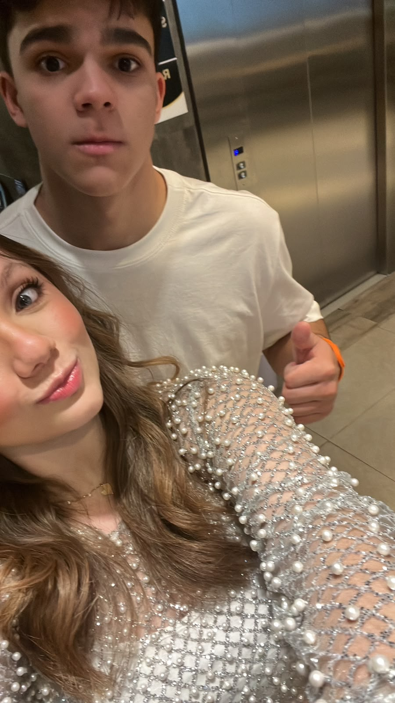

PARA QUEM DEU PLAY NESSA IDEIA
Rafaela,
Rafaela,
minha história favorita
é com você.
Esse cantinho nasceu de uma ideia sua. E eu não podia deixar de guardar aqui o quanto você é especial pra mim.
Entre tantos filmes, tantos finais e tantas histórias, a minha favorita continua sendo a que a gente vive junto.
Obrigado por me inspirar, por dividir a vida comigo e por deixar meus dias mais bonitos. O Flix List começou com você. E essa surpresa é só um jeitinho de dizer:
Eu te amo, Rafaela.
Com amor, do seu companheiro de todos os filmes.